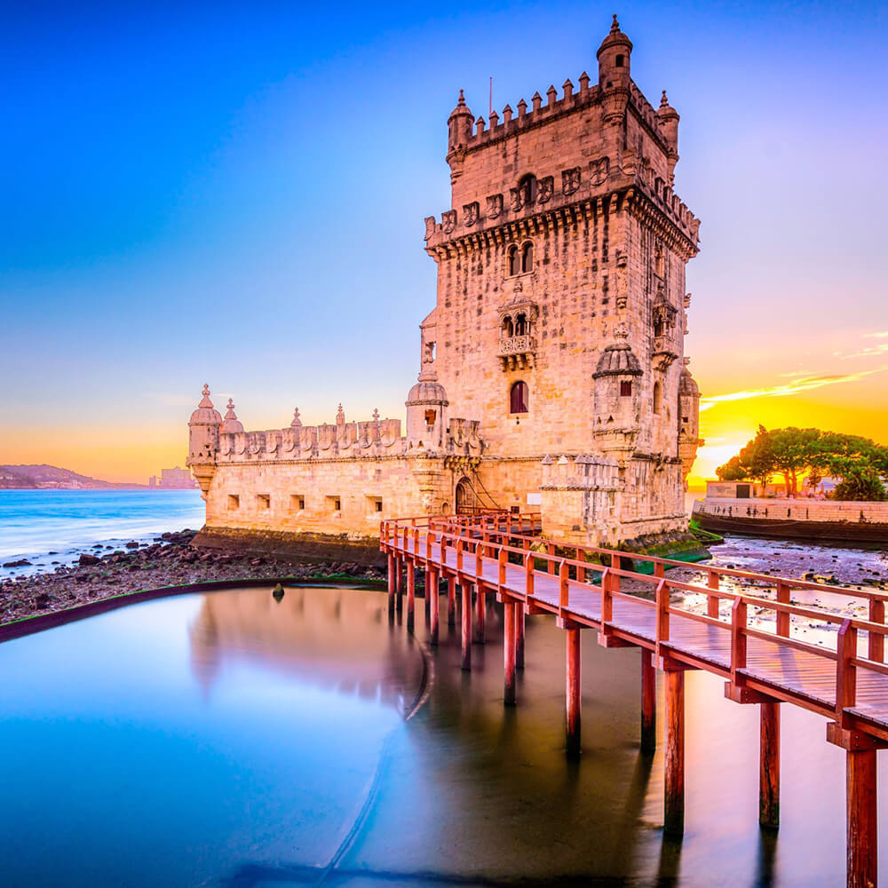
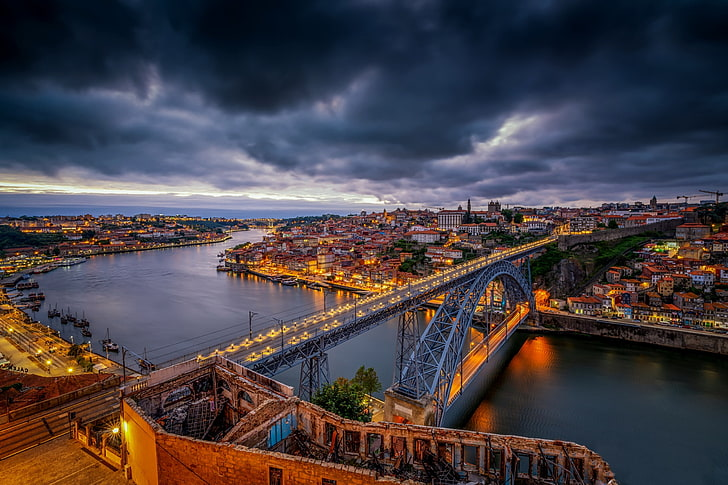

Portugal é um país encantador situado na costa oeste da Europa, conhecido por sua rica história, belas paisagens e deliciosa gastronomia. Lisboa, a capital, é uma cidade vibrante com ruas de paralelepípedos, edifícios históricos e uma atmosfera cosmopolita. O Porto é famoso por seu vinho do Porto e suas pitorescas ruas estreitas. O Algarve, no sul, é famoso por suas praias de areias douradas e falésias impressionantes. Castelos medievais, pratos de frutos do mar frescos e a rica cultura portuguesa da música tradicional do fado. Portugal é um destino turístico diversificado que oferece algo para todos os gostos.

| Hotel | Localização | Preço por Dia (USD) | Dias |
|---|---|---|---|
| Tivoli Avenida Liberdade | Avenida da Liberdade | $200 | 3 |
| Altis Avenida Hotel | Baixa | $180 | 3 |
| Bairro Alto Hotel | Bairro Alto | $220 | 3 |

| Hotel | Localização | Preço por Dia (USD) | Dias |
|---|---|---|---|
| The Yeatman | Vila Nova de Gaia | $300 | 2 |
| PortoBay Hotel Teatro | Baixa | $200 | 2 |
| Porto A.S. 1829 Hotel | Ribeira | $150 | 2 |
